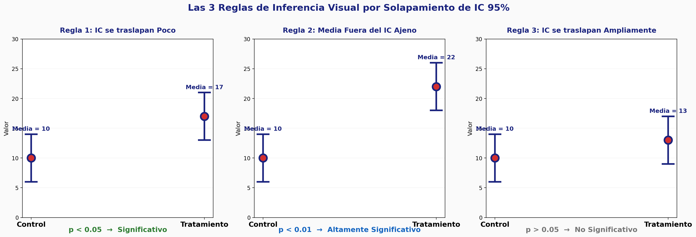
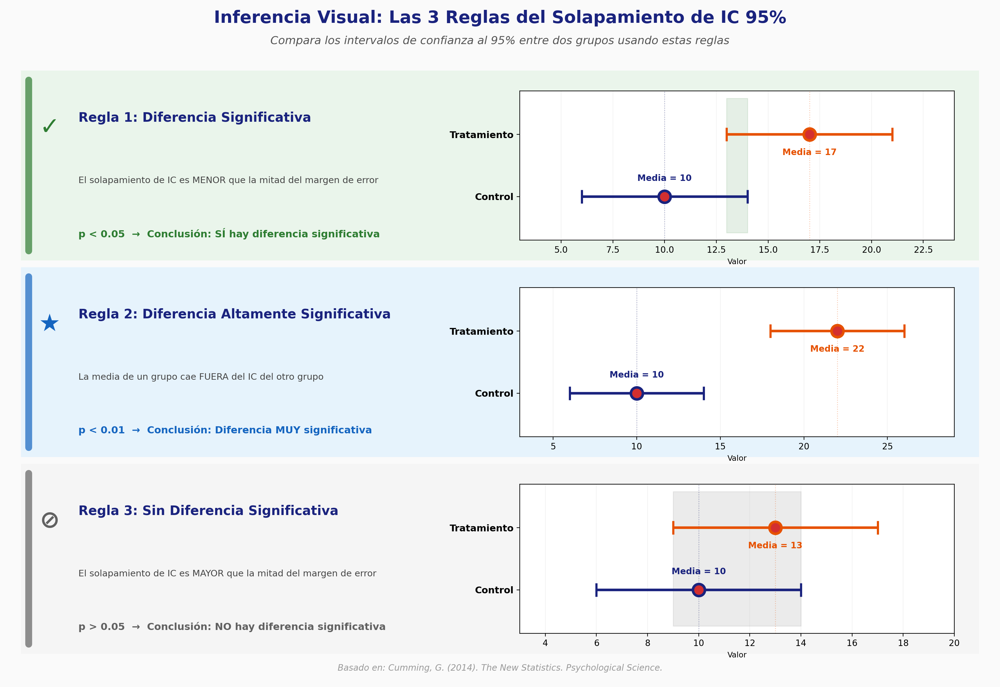

Laboratorio de Inferencia Visual
Ajusta media, desviación estándar y tamaño de muestra; observa el solapamiento de los intervalos y decide si hay diferencia significativa.
Configuración
Escenarios de demostración
Solapamiento de Intervalos
💡 Asistente Pedagógico
⚡ Desafío de Inferencia
Observa las barras de error al 95% y decide si los grupos difieren significativamente (según las reglas de Cumming).
¿Existe diferencia significativa (p < 0.05) entre los grupos?
Manual de Inferencia Visual
Aprende a interpretar barras de error en gráficos de grupos: las 3 reglas de solapamiento de Geoff Cumming y errores a evitar.
¿Qué son las barras de error?
Una barra de error indica la incertidumbre alrededor de la media de un grupo. Su longitud puede representar el error estándar (SE), la desviación estándar (SD) o el intervalo de confianza al 95% (IC). Elegir una u otra cambia por completo la interpretación: las barras SE y SD describen la dispersión de los datos; las barras IC comunican la precisión de la estimación de la media.
InferStat usa las reglas visuales propuestas por Geoff Cumming para decidir, a partir del solapamiento de los IC al 95%, si dos medias difieren significativamente (p < 0.05), sin necesidad de calcular el p-value.
Las 3 reglas de solapamiento

1. Separación total → p < 0.01. Si los IC no se tocan, la evidencia de una diferencia real es muy fuerte.
2. Solapamiento menor a la mitad de un brazo → p < 0.05. Si las barras se cruzan menos de la mitad de la distancia media-límite, aún hay evidencia moderada de diferencia.
3. Solapamiento mayor a la mitad de un brazo → no significativo. Si las barras se cruzan más allá de la mitad de sus brazos, la diferencia probablemente se debe al azar.
Guía rápida de interpretación

- Compara mismo tipo de barras entre grupos; nunca barras IC contra barras SE.
- Con n pequeños (n ≤ 10) los IC son muy anchos: la ausencia de significancia puede deberse a falta de potencia.
- Las letras de agrupación (CLD): grupos que comparten una letra no difieren significativamente; grupos sin letras en común sí difieren.
- Ante varianzas heterogéneas, el solapamiento visual puede ser engañoso; interpreta con cautela.
¿Cómo usar InferStat?
Modo Libre: define de 2 a 5 grupos y ajusta la media (M), desviación estándar (SD) y tamaño muestral (n) de cada uno. Elige el tipo de barras y observa el gráfico. Activa las letras de agrupación para ver qué grupos difieren. Exporta escenarios en JSON para reutilizarlos en clase.
Modo Desafío: se generan dos grupos aleatorios y debes decidir, solo con el ojo clínico, si su diferencia es significativa. Recibes retroalimentación inmediata tipo «Sí/No correcto», ideal para entrenar la intuición estadística.
Asistente Científico IA
Consulta al asistente InferStat sobre barras de error, intervalos de confianza, reglas de Cumming e inferencia visual.
InferStat IA
¡Hola! Soy el asistente de InferStat. Puedo ayudarte con:
- Interpretación de barras de error (SE, SD, IC 95%)
- Las 3 reglas de solapamiento de Geoff Cumming
- Diferencia entre significancia estadística y relevancia práctica
- Errores comunes al graficar e interpretar intervalos